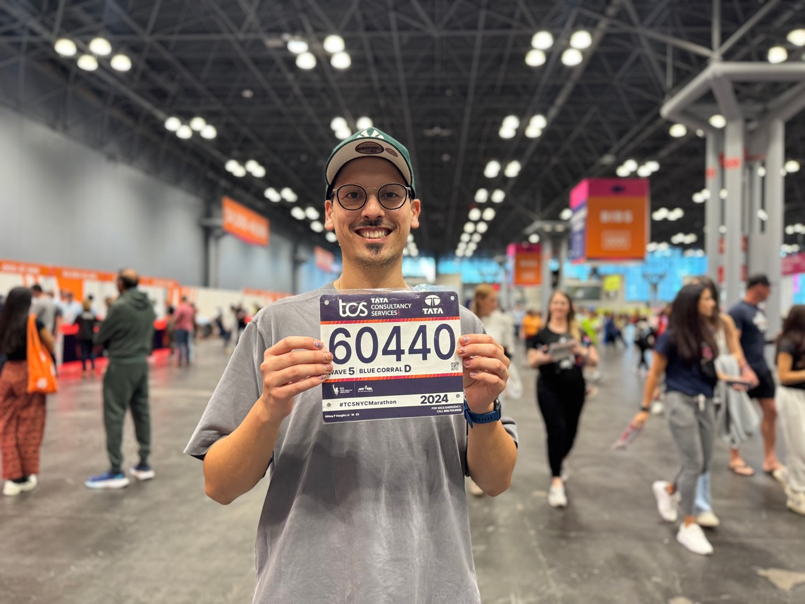

About Mikey
From Patient Care
to Public Life

Mikey Vaughn is a Los Angeles healthcare worker, union leader, and political strategist. He advocates for immigrant rights and safe access to care, builds community partnerships, and helps people become leaders in their workplaces and neighborhoods.
A certified nursing assistant and co-chair of SEIU-UHW’s Immigration Workgroup, he has testified before California lawmakers about protecting immigrant patients and healthcare workers.
He also manages political campaigns and develops member training in advocacy and digital organizing.
Explore Mikey’s WorkRaised in New York, Mikey spent much of his childhood in New Zealand. He has called Los Angeles home for more than a decade.
An avid runner, he’s completed two Los Angeles Marathons and one New York City Marathon. He also holds a 300-hour yoga certification.
A Personal Connection
The Story Behind
the Logo
Mikey often wears a shepherd’s whistle made from New Zealand jadestone (pounamu). It connects him to the South Island, where he spent much of his childhood and where much of his family lives.
His logo carries that connection into his work: a call to come together, look after one another, and take part. Together with the stars, the necklace hole forms the Southern Cross, a constellation in New Zealand’s night sky that helps guide people in the right direction. It takes a village, and being part of one means showing up.